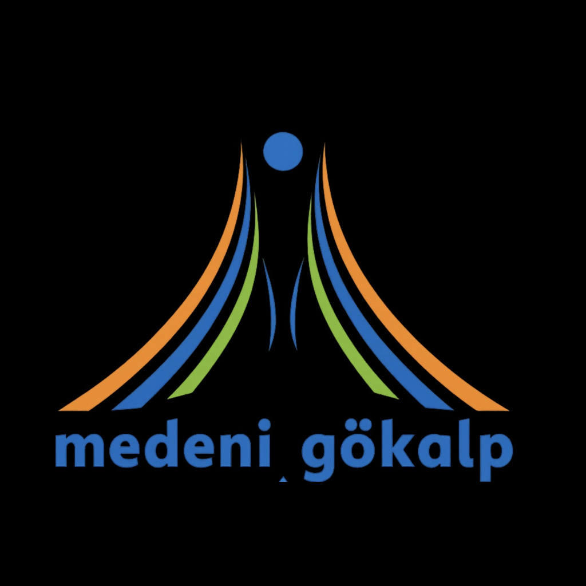

Değişkenleri değiştir, sonucu anında gör.
Arrhenius tanımı: Suda çözündüğünde H⁺ (H₃O⁺) iyonu veren maddeler asit, OH⁻ iyonu veren maddeler bazdır.
Kuvvetli asit/baz suda %100 iyonlaşır (tek yönlü tepkime). Örnek: HCl → H⁺ + Cl⁻ (tamamlanır, geri dönüşü yok).
Zayıf asit/baz suda kısmen iyonlaşır; bir denge kurulur ve iyonlaşma sabiti (Ka veya Kb) ile ifade edilir. Ka/Kb ne kadar büyükse asit/baz o kadar kuvvetlidir.
Derişim (C), çözünen maddenin mol sayısının (n) çözelti hacmine (V) oranıdır:
Kuvvetli asitte [H⁺] doğrudan derişime eşittir (çok değerlikli asitlerde katsayı ile çarpılır). Zayıf asitte ise [H⁺], Ka ve C'nin karekökü ile ilişkilidir çünkü iyonlaşma tam değildir:
Bu yüzden aynı derişimdeki kuvvetli bir asit, zayıf bir asitten daha düşük pH'a (daha asidik) sahiptir — çünkü daha fazla H⁺ iyonu serbest bırakır.
Hacim (V) arttıkça (seyreltme) derişim azalır, bu da asitlerde pH'ı yükseltir (nötre yaklaşır), bazlarda pH'ı düşürür.
Atom kavramı, tarih boyunca deneysel bulgular ışığında sürekli yenilenen bir modeldir. Her yeni model, bir öncekinin açıklayamadığı bir deneysel gözlemi açıklamak için ortaya atılmıştır. Bu, bilimin kendini düzelten doğasının klasik bir örneğidir.
Dalton, kütlenin korunumu ve sabit oranlar kanunlarından yola çıkarak ilk bilimsel atom modelini önerdi. Temel varsayımları:
Eksik yönü: Atomun bölünemez, katı ve yekpare bir küre olduğunu varsaydı. Elektron, proton, nötron gibi atom altı parçacıklar henüz keşfedilmemişti; izotop kavramı da bu modele aykırıdır (aynı elementin farklı kütleli atomları olabilir).
Thomson, katot ışını tüpü deneyleriyle elektronu keşfetti ve onun kütle/yük oranını hesapladı. Atomun içinde negatif yüklü parçacıklar bulunduğunu, ama atomun bir bütün olarak nötr olduğunu fark etti.
Modeline göre atom, pozitif yükün homojen dağıldığı bir "hamur" içine gömülü negatif elektronlardan oluşan küresel bir yapıdır — tıpkı üzümlü keydeki üzümler gibi.
Eksik yönü: Pozitif yükün atomun neresinde yoğunlaştığını doğru tahmin edemedi; çekirdek kavramı yoktu.
Rutherford'un öğrencileri Geiger ve Marsden, ince altın folyoya alfa parçacıkları (He²⁺) gönderdiler (Altın Yaprak Deneyi). Sonuçlar şaşırtıcıydı:
Bu sonuçtan Rutherford şu sonuçlara vardı: Atomun kütlesinin ve pozitif yükünün neredeyse tamamı, atomun toplam hacminin çok küçük bir bölümünü kaplayan yoğun bir çekirdekte toplanmıştır. Elektronlar, bu çekirdeğin etrafında büyük ölçüde boş uzayda dolanır. Atomun büyük kısmı boşluktur.
Eksik yönü: Klasik fiziğe göre, çekirdek etrafında dönen (ivmelenen) bir elektron sürekli enerji kaybederek çekirdeğe düşmeli ve atom çökmelidir. Bu model, atomun neden kararlı olduğunu açıklayamadı.
Bohr, Rutherford modelini kuantum fikirleriyle (Planck'ın enerji kuantumu kavramı) birleştirerek şu postülaları önerdi:
Bu model, hidrojen atomunun çizgi spektrumunu (Balmer, Lyman serileri) matematiksel olarak mükemmel şekilde açıkladı — bu onun en büyük başarısıydı.
Eksik yönü: Sadece tek elektronlu sistemler (H, He⁺ gibi) için doğru sonuç verir; çok elektronlu atomların spektrumlarını, ince yapı çizgilerini ve manyetik alan etkilerini (Zeeman etkisi) açıklayamaz.
Louis de Broglie, her hareketli parçacığın (elektron dahil) bir dalga özelliği de taşıdığını önerdi (dalga-tanecik ikiliği). Werner Heisenberg'in belirsizlik ilkesine göre bir elektronun konumu ve momentumu (hızı) aynı anda kesin olarak ölçülemez.
Bu nedenle Erwin Schrödinger, elektronun kesin bir yörüngesi yerine, belirli bir bölgede bulunma olasılığını tanımlayan dalga fonksiyonunu (Ψ) matematiksel olarak formüle etti. Elektronun %90-95 olasılıkla bulunduğu üç boyutlu uzay bölgesine orbital denir.
Bu model, atomun günümüzde kabul edilen en doğru ve kapsamlı tanımıdır; çok elektronlu atomların davranışını, periyodik tablodaki düzeni ve kimyasal bağ oluşumunu başarıyla açıklar.
Dalton: Bölünemez katı küre → Thomson: Elektronlu pozitif hamur → Rutherford: Boşluklu, çekirdekli atom → Bohr: Sabit enerji seviyeli yörüngeler → Kuantum: Olasılıksal elektron bulutu (orbital).
Katı hal, taneciklerin (atom, iyon veya molekül) birbirine göre sabit konumlarda bulunduğu, sadece titreşim hareketi yapabildiği madde halidir. Katılar, tanecik diziliminin düzenliliğine göre iki ana sınıfa ayrılır: kristal (kristalin) ve amorf.
Tanecikler üç boyutlu uzayda uzun mesafeli düzen (long-range order) gösteren, belirli bir geometrik desende tekrar eden bir örgü (kristal kafes / birim hücre) oluşturur. Bu düzenlilik, kristallerin genellikle düzgün geometrik yüzeylere ve keskin köşelere sahip olmasının sebebidir.
Ayırt edici özellik — keskin erime noktası: Kristal örgüdeki tüm bağlar aynı türde ve aynı kuvvette olduğundan, ısıtıldığında belirli bir sıcaklıkta tüm bağlar aynı anda kırılmaya başlar; bu yüzden erime çok dar bir sıcaklık aralığında (neredeyse anlık) gerçekleşir.
Kristal katılar, tanecikleri bir arada tutan bağ/etkileşim türüne göre 4 alt gruba ayrılır:
Tanecik dizilimi düzensizdir; kısa mesafeli düzen olabilir ama uzun mesafeli, tekrar eden bir örgü yoktur. Amorf katılar genellikle "dondurulmuş" veya "çok yavaş akan" bir sıvı gibi düşünülebilir — bu yüzden bazı bilim insanları camı teknik olarak çok yüksek viskoziteli bir sıvı olarak sınıflandırır.
Ayırt edici özellik — belirsiz erime noktası: Bağlar farklı kuvvette olduğundan ısıtıldıkça zayıf bağlar önce, güçlü bağlar sonra kırılır; madde geniş bir sıcaklık aralığında kademeli olarak yumuşar (buna camsı geçiş sıcaklığı - Tg denir), belirli, keskin bir erime noktası yoktur.
Örnekler: cam (SiO₂ esaslı, düzensiz silikat ağı), çoğu plastik/polimer, kauçuk, bal mumu, amorf silikon.
Metal atomları düzenli bir kristal örgü (genelde kübik sıkı paket, hegzagonal sıkı paket veya cisim merkezli kübik yapı) oluşturur. Metal atomlarının değerlik elektronları belirli bir atoma sıkı bağlı değildir — tüm örgü boyunca serbestçe hareket edebilen, delokalize olmuş bir "elektron denizi" (elektron bulutu) oluştururlar. Pozitif metal iyonları bu negatif elektron denizi içinde adeta yüzer, ve elektrostatik çekim tüm yapıyı bir arada tutar (metalik bağ).
Bu model, metallerin karakteristik özelliklerini açıklar:
Mutlak sıfırın üzerindeki her sıcaklıkta tanecikler denge konumları etrafında titreşim hareketi yapar (bu titreşim hiçbir zaman tamamen durmaz — sıfır nokta enerjisi). Sıcaklık arttıkça bu titreşimin genliği ve kinetik enerjisi artar.
Erime noktasına ulaşıldığında, taneciklerin ortalama kinetik enerjisi, onları örgüde tutan çekim kuvvetlerinin (potansiyel enerji engelinin) üstesinden gelecek düzeye ulaşır. Bu noktada eklenen ısı enerjisinin tamamı, sıcaklığı artırmak yerine örgü bağlarını kırmaya (erime gizli ısısı, ΔH_erime) harcanır — bu yüzden erime sırasında sıcaklık sabit kalır (ısıtma eğrisinde yatay plato görülür).
Sonuç karşılaştırması: Kristal katılarda bu plato çok dar ve keskindir (ani faz değişimi). Amorf katılarda böyle net bir plato yoktur; madde geniş bir aralıkta giderek yumuşar ve akışkanlaşır.
Viskozite (η, "eta"), bir akışkanın (sıvı veya gaz) tabakalarının birbirine göre kaymasına karşı gösterdiği iç sürtünme direncidir. Bir sıvı akarken, sıvının farklı katmanları farklı hızlarda hareket eder (özellikle boru/tüp içinde, duvara yakın katmanlar daha yavaş akar); bu katmanlar arasındaki sürtünme viskoziteyi oluşturur. Yüksek viskoziteli sıvılar (bal, motor yağı, gliserin) yavaş akar; düşük viskoziteli sıvılar (su, aseton, benzin) hızlı akar.
Viskozitenin SI birimi Pascal-saniye (Pa·s), yaygın kullanılan birimi ise santipuaz (cP)'dır. Suyun 20°C'deki viskozitesi yaklaşık 1 cP'dir; bu, karşılaştırma için bir referans noktasıdır.
Su gibi sıvılarda viskozite, uygulanan kesme gerilimine bağlı olmadan sabittir — bunlara Newton tipi akışkan denir. Ancak bazı akışkanlarda (ketçap, kan, nişasta-su karışımı) viskozite, akışkana uygulanan kuvvete/hıza bağlı olarak değişir — bunlara Newton dışı (non-Newtonian) akışkan denir. Bu ileri düzey bir konudur ama viskozite kavramının basit bir sabit olmadığını göstermesi açısından önemlidir.
Bir sıvı içine bırakılan küçük, küresel bir cismin (bilyenin) ulaştığı sabit son hız (terminal velocity), Stokes yasasıyla viskoziteye bağlanır:
Burada r bilyenin yarıçapı, ρ yoğunluklar, g yerçekimi ivmesi, η viskozitedir. Bu denklemden görüldüğü gibi, bilyenin düşme hızı viskoziteyle ters orantılıdır — sıvı ne kadar viskoz ise bilye o kadar yavaş düşer. Bu simülasyonda kullanılan prensip tam olarak budur ve gerçek laboratuvarlarda "düşen bilye viskometresi" olarak bilinen cihazlarda uygulanır.
Periyodik tablo, elementlerin artan atom numarasına (proton sayısına) göre, benzer kimyasal özellik gösterenler alt alta gelecek şekilde düzenlendiği bir sistemdir. Bir elementin tablodaki tam yerini (periyot ve grup) bulmak için o elementin elektron dizilimine bakmak yeterlidir — çünkü periyodik tablonun yapısı doğrudan elektron dizilimlerindeki düzenden kaynaklanır.
Basit (Bohr) modelde elektronlar kabuklara, kabuk kapasitesi 2n² kuralına (n: kabuk numarası) yaklaşık olarak uyacak şekilde yerleştirilir. Uygulamada ilk birkaç kabuk için: 1. kabuk maksimum 2 elektron, 2. kabuk maksimum 8, 3. kabuk (basitleştirilmiş modelde) maksimum 8 (gerçekte 18 ama önce dış kabuk dolar mantığıyla 8'de durur), sonraki kabuklar giderek daha fazla elektron alabilir.
Örnek: Sodyum (Na, Z=11) → 2-8-1 şeklinde dizilir (2+8+1=11 ✓).
Periyot numarası, atomun temel halde sahip olduğu toplam enerji kabuğu (katman) sayısına eşittir. Elektron dizilimindeki basamak sayısı, periyot numarasını verir.
Ana grup (A grubu / temsili) elementlerinde grup numarası, atomun en dış kabuğundaki (değerlik kabuğu) elektron sayısına doğrudan eşittir:
Not: Geçiş metalleri (B grubu, 21-30, 39-48 vb.) için grup belirleme kuralı farklıdır ve d orbitallerinin dolmasıyla ilgilidir; bu simülasyon temel/ana grup elementlerine (Z=1-20 ve bazı 4. periyot elementlerine) odaklanır.
Aynı grup (dikey sütun) elementleri benzer kimyasal özellikler gösterir, çünkü değerlik elektron sayıları aynıdır ve kimyasal davranış büyük ölçüde değerlik elektronları tarafından belirlenir. Örneğin tüm 1A grubu elementleri su ile şiddetli tepkir ve +1 yüklü iyon oluşturur.
Aynı periyot (yatay satır) elementleri ise artan atom numarasıyla kabuk sayısı sabit kalırken çekirdek (proton) sayısı arttığı için, elektronlar çekirdeğe daha güçlü çekilir. Bu durum, periyot boyunca soldan sağa sistematik özellik değişimlerine yol açar:
Bu düzenlilik sayesinde, bir elementin tablodaki konumunu bilerek, o elementin özellikleri hakkında (bilmesek bile) güçlü tahminlerde bulunabiliriz — bu, Mendeleev'in orijinal periyodik tablosunun en büyük gücüydü.
İyonik bağ, elektronegatiflik farkı büyük olan (genellikle Δ>1.7) bir metal ile bir ametal atomu arasında, elektronların bir atomdan diğerine tamamen transfer edilmesi sonucu oluşan güçlü elektrostatik çekim bağıdır. Metaller elektron vermeye (düşük iyonlaşma enerjisi), ametaller elektron almaya (yüksek elektron ilgisi) eğilimlidir — bu zıt eğilim iyonik bağın temelini oluşturur.
Atomlar, en dış kabuklarında 8 elektron (helyum için 2) bulundurarak soy gazlara özgü kararlılığa ulaşmaya çalışırlar — buna oktet kuralı denir. İyonik bağ oluşumunun itici gücü tam olarak budur: her iki atom da elektron alışverişiyle kararlı bir dizilime ulaşır.
Metal ve ametalin oluşturduğu iyon yükleri (değerlikleri) birbirine çapraz olarak indis şeklinde yazılır ve varsa sadeleştirilir. Bunun temelinde yatan fizik kuralı, bileşiğin bütün olarak elektriksel nötr olması gerekliliğidir — yani toplam pozitif yük, toplam negatif yükü tam olarak dengelemelidir.
Kimyasal kinetik, tepkimelerin ne kadar hızlı gerçekleştiğini ve bu hızı etkileyen faktörleri inceleyen kimya dalıdır. Tepkime hızı, reaktan derişiminin azalma veya ürün derişiminin artma oranı olarak tanımlanır (mol/L·saniye biriminde).
Bir tepkimenin gerçekleşmesi için reaktan tanecikleri çarpışmalıdır, ancak her çarpışma ürün oluşturmaz. Etkili (verimli) bir çarpışma için iki koşul birden sağlanmalıdır:
Bir tepkimenin deneysel hız denklemi, sadece deneyle belirlenebilir (denklemin katsayılarından tahmin edilemez, istisnalar hariç):
Burada k hız sabitidir — sıcaklığa ve katalizör varlığına bağlıdır ama derişime bağlı değildir. m+n toplamı, tepkimenin toplam mertebesini (reaction order) verir.
Kovalent bağ, genellikle iki ametal atomu arasında (bazen ametal-yarı metal arasında), elektronların bir atomdan diğerine tamamen transferi yerine, bir veya daha fazla elektron çiftinin iki atom arasında ortaklaşa (paylaşılarak) kullanılmasıyla oluşan bağ türüdür. Her iki atom da bu paylaşılan elektronları kendi değerlik kabuğunun parçası sayar ve böylece her ikisi de oktet (veya duplet, H için) kararlılığına ulaşır.
Kovalent bağın oluşma sebebi, ametal atomlarının elektronegatifliklerinin (elektron çekme eğilimlerinin) birbirine yakın ve yüksek olmasıdır — hiçbiri elektronu tamamen "kazanacak" kadar baskın değildir, bu yüzden paylaşım en enerjik açıdan uygun (kararlı) çözümdür.
İki atom birbirine yaklaştığında, her birinin eşleşmemiş (tek) değerlik elektronları çakışarak bir orbital bölgesi oluşturur; bu bölgede iki elektron zıt spinli olarak bir arada bulunabilir (Pauli dışarlama ilkesi gereği). Bu paylaşılan elektron çiftine bağ elektron çifti, paylaşılmayıp atomda kalan çiftlere ise ortaklanmamış (yalın) elektron çifti denir.
İki atom arasında paylaşılan elektron çifti sayısına göre bağlar sınıflandırılır:
Genel eğilim: Bağ sayısı arttıkça bağ uzunluğu kısalır, bağ enerjisi (bağı kırmak için gereken enerji, yani bağ kuvveti) artar. Bu yüzden N₂'deki üçlü bağ çok kararlıdır ve azotu kimyasal olarak inert (tepkimeye girmeye isteksiz) yapar.
Tek bağlar her zaman bir σ bağıdır — orbitallerin baş başa (eksenel) örtüşmesiyle oluşur, bağ ekseni etrafında serbest dönme mümkündür. Çift ve üçlü bağlarda σ bağına ek olarak, orbitallerin yanal (paralel) örtüşmesiyle oluşan π bağı da vardır; π bağı varlığı, bağ ekseni etrafında serbest dönmeyi engeller (örneğin çift bağlı karbon bileşiklerinde cis-trans izomerliğin sebebi budur).
Difüzyon: Gaz (veya sıvı) taneciklerinin, derişim farkı nedeniyle kendiliğinden ve rastgele hareketlerle yüksek derişimden düşük derişime doğru yayılarak karışmasıdır. Örneğin bir odanın köşesinde açılan parfüm şişesinin kokusunun zamanla tüm odaya yayılması difüzyondur.
Efüzyon: Gaz taneciklerinin, kendi ortalama serbest yolundan (moleküller arası ortalama mesafeden) çok daha küçük tek bir delikten, basınç farkı nedeniyle boşluğa (veya düşük basınçlı bir bölgeye) kaçmasıdır. Difüzyondan farkı, tanecik-tanecik çarpışmalarından çok tanecik-delik etkileşiminin baskın olmasıdır.
Gaz kinetik teorisine göre, sabit bir sıcaklıkta tüm gaz moleküllerinin ortalama kinetik enerjisi aynıdır (KE = ½mv², bu değer sadece sıcaklığa bağlıdır, gaz türüne bağlı değildir). Ortalama kinetik enerji sabitken, kütlesi küçük olan moleküllerin hızının daha büyük olması gerekir — bu, Graham yasasının fiziksel temelidir.
Thomas Graham (1848), aynı sıcaklık ve basınçta, iki farklı gazın difüzyon veya efüzyon hızlarının oranının, mol kütlelerinin (veya yoğunluklarının) kareköküyle ters orantılı olduğunu deneysel olarak buldu:
Burada v hız, M mol kütlesi, d yoğunluktur. Bu denklem, iki gazın aynı mesafeyi kat etme sürelerini karşılaştırmak için de kullanılabilir (süre, hızla ters orantılıdır):
Aynı ortamda bırakılan hidrojen gazı (H₂, M=2 g/mol), oksijen gazından (O₂, M=32 g/mol) çok daha hızlı yayılır. Hız oranı: √(32/2) = √16 = 4 kat daha hızlı. Bu prensip, tarihsel olarak uranyum izotoplarının (²³⁵U ve ²³⁸U) ayrılmasında gazlı difüzyon yöntemiyle de kullanılmıştır — çok küçük kütle farkları bile milyonlarca tekrar edilen efüzyon adımıyla anlamlı bir ayrım sağlayabilir.
Faz diyagramı, bir maddenin hangi basınç ve sıcaklık koşullarında hangi fizik halde (katı, sıvı, gaz) termodinamik olarak kararlı bulunacağını gösteren iki boyutlu (P-T) bir grafiktir. Diyagramdaki her bölge, tek bir fazın kararlı olduğu koşulları; sınır çizgileri ise iki fazın dengede bir arada bulunabildiği koşulları temsil eder.
Bu simülasyon su (H₂O) örneğini kullanır: 1 atm basınçta erime noktası 0°C, kaynama noktası 100°C'dir. Sürgüleri hareket ettirerek farklı (T,P) kombinasyonlarında suyun hangi fazda bulunacağını gözlemleyebilir, aynı zamanda basıncın kaynama/erime noktalarını nasıl kaydırdığını görebilirsiniz.